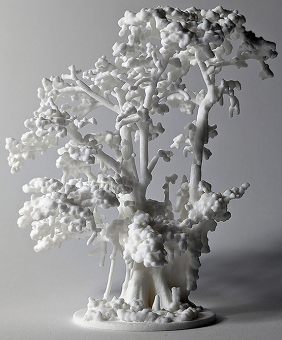
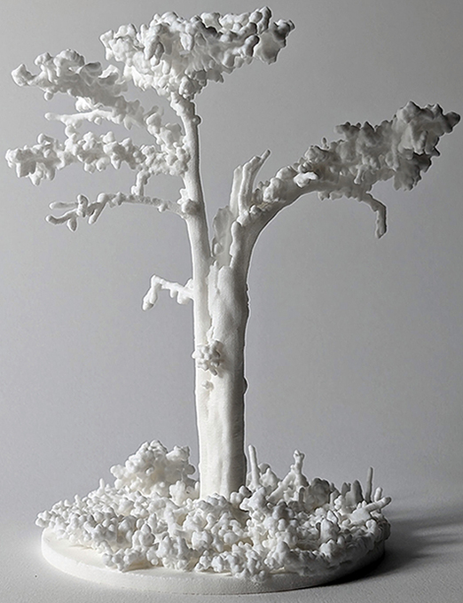

Hye Yeon Nam
Field Recording
3D printed trees and point-cloud simulation


Field Recordings consists of five digitally fabricated sculptures that preserve disappearing ecological landscapes through terrestrial laser scanning, neural rendering, and selective laser sintering. As climate change, land loss, and environmental degradation threaten ancient cypress forests, coastal prairies, and vulnerable flora, the project investigates how machine vision records, transforms, and reconstructs these environments.
Rather than treating digital scanning as neutral archival documentation, Field Recordings explores the tension between physical landscapes and their computational representations. Laser scanning and neural rendering translate physical environments into point clouds and volumetric models reducing living ecosystems and botanical specimens to raw data. These digital archives are then rematerialized through high-resolution 3D printing into sculptural objects that simultaneously document and reinterpret endangered places.
The series includes the Big Cypress, a 1,500-year-old bald cypress on Cat Island; the Monarch of the Swamp, a 600-year-old cypress in Jean Lafitte National Historical Park; a blanketflower, native to the critically endangered Cajun Prairie ecosystem; and botanical reconstructions of an American sycamore and a Japanese maple.
Rather than functioning as passive replicas, these sculptures visualize the limits of machine perception. They expose both the precision and incompleteness of computational sensing, revealing how algorithms selectively see, omit, and reconstruct the natural world. By translating ecological landscapes into tangible computational artifacts, Field Recordings invites audiences to reflect on the relationship between material presence and digital absence and on the role of visualization in preserving environmental memory.
Exhibition
2026 Nov IEEE VISAP MIT Met Warehouse